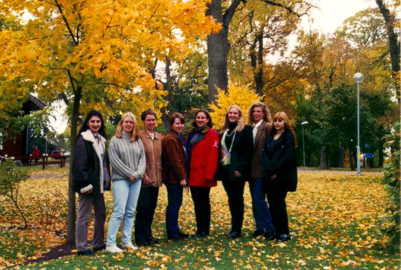

Donna är D-sektionens tjejförening.Tillsammans med de andra tjejföreningarna, Emma, Tingeling, Yvette, C-sters och Ior, bildar vi tjejteknologföreningen Linnea. Vi är ca 70 st tjejer som läser på D-linjen och IT-programmet just nu. Att vi inte är så många gör att vi känner varandra desto bättre och vi gör en massa skoj saker tillsammans under terminerna.
När de nya flickorna för året anländer till LiTH ordnar vi en välkomstgrillning för dem med grillade köttbitar, sallad och öl. Under hösten har vi en dammiddag med manliga servitörer och under våren har Donna sitt årsmöte med fika med högt kaloriinnehåll. Första söndagen i varje månad anordnas även fikakvällar och en vinprovar- och julpysselkväll hinns också med i höstmörkret. Vi sportar tillsammans i LSIF:s innebandy- och volleybollturneringar.
